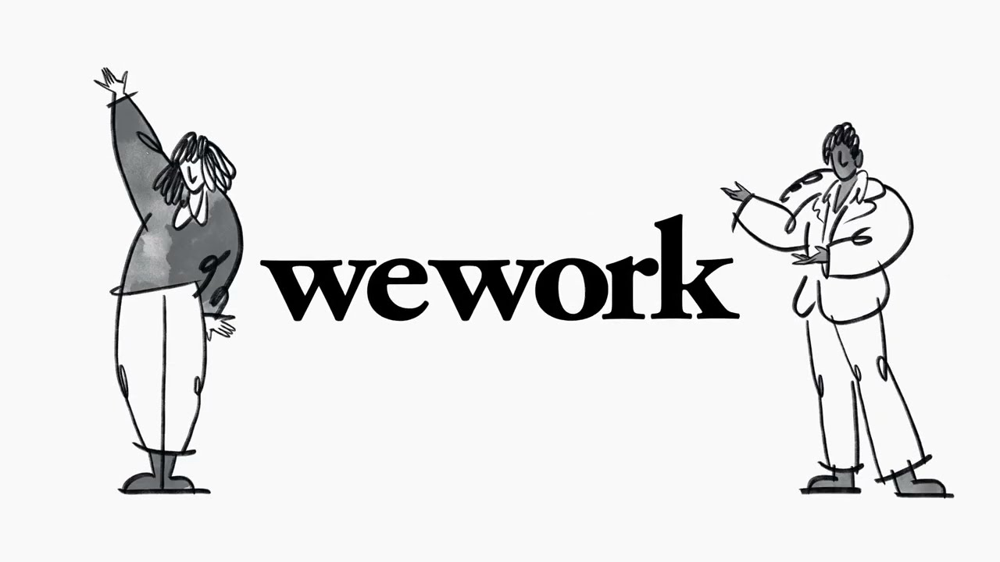
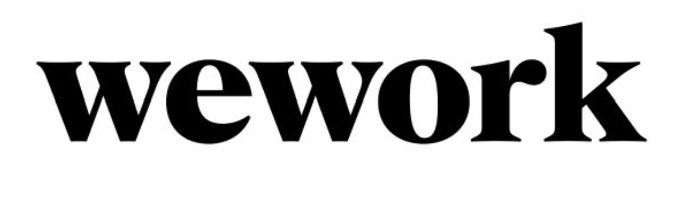

WEWORK | STRATEGIC ASSESSMENT
Technology-enabled workspace
expansion and strategic retreat
USF | ISM 6930 | October 2026
- Framework Analyst
- Jose Trevino, Kai Reichgelt, Cole Kostrzewa
- Brief Writer
- Clark Brown
- Presenter
- Group 12
THE DECISION

Strategic Verdict
WeWork digitalized workspace access and operations, but did not transform the economics of the underlying real estate business.
Structural Pattern
Governance lagged growth → expansion preceded operating foundations → long-term lease exposure persisted despite digital investment → restructuring became necessary.
90-Day Recommendation | 2019 Strategic Reset
At the 2019 strategic reset, the CEO and CFO should have imposed a 90-day, board-approved lease-commitment gate: freeze new long-term lease approvals until every proposed location passes a documented occupancy, cash-flow, and downside-scenario test, with exceptions requiring independent board approval.
Success would be measured by 100% of new commitments passing the gate and a board-reviewed register of existing locations prioritized for renegotiation or exit.
Thank You | Questions